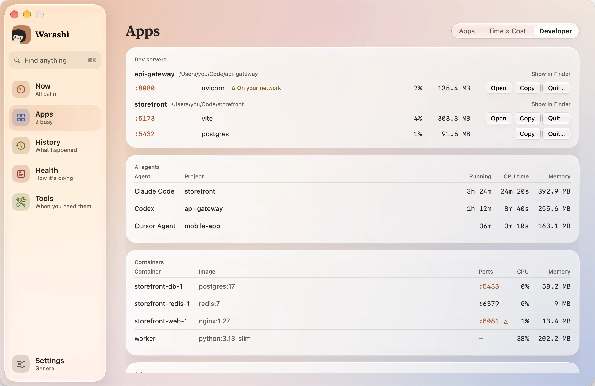
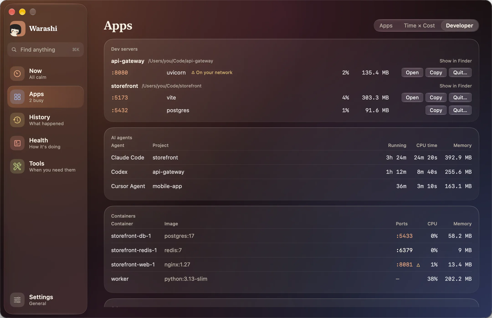

开发者是 App 中的一个标签页。它只在显示于屏幕上时才读取你的端口和智能体。


开发服务器
服务器按其启动时所在的文件夹分组，并显示端口、CPU 和内存。打开会在浏览器中打开它，拷贝会拷贝它的地址，退出…会在你确认后请它停止。△ 在你的网络上表示你网络中的其他设备可能可以访问它。
AI 智能体
每个正在运行的 Claude Code、Codex、Cursor Agent、Gemini CLI、Aider、OpenCode、Amp 或 Goose 会话，以及它的项目、已运行时长、CPU 时间和内存。智能体启动的工具计入该智能体。
其他开放端口
其他所有开放了端口的内容，例如本地 AI 模型。macOS 自身的服务已隐藏。
补充说明：CPU 时间不包括在你打开此页面之前已结束的工具。从同一项目的不同子文件夹启动的两个服务器会显示为两个项目，因为 Warashi 只看各自启动时所在的文件夹。
如果出现问题
- 某个端口没有显示：无法读取以管理员身份运行的进程所占用的端口。
- 某个智能体没有显示：智能体是根据已知程序列表识别的。请把你使用的那个告诉 adam@warashi.app。
更多内容见疑难解答，或发送电子邮件至 adam@warashi.app。